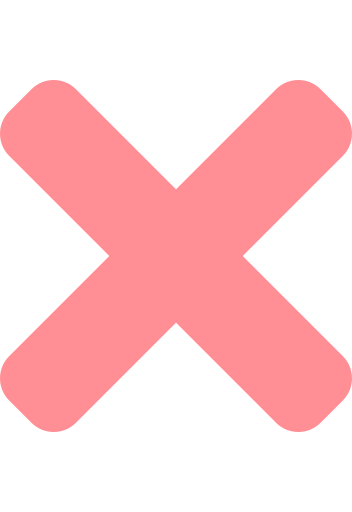

Yellow
: information
: information

Yellow is a simple drawing app created by Oleksandr Kryvonos, a developer from Odesa, Ukraine.
feel free to e-mail me:
oleksandr.kryvonos.ods.ua@gmail.com
Support on Patreon
Reset
Source code information:
yellow is distributed under MIT license.
yellow is an open-source project:
https://github.com/uprun/yellow
Patreon supporters:
just draw.
i - info
 i - info
i - info
i - info
i - info